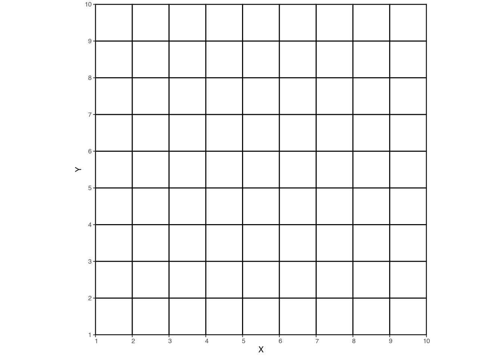
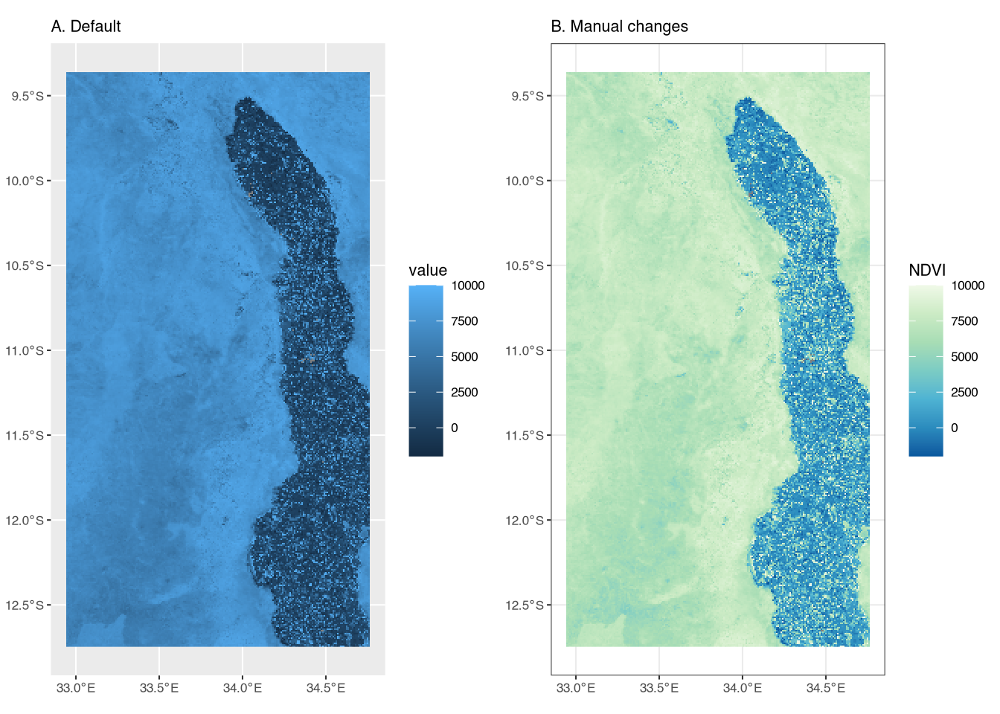
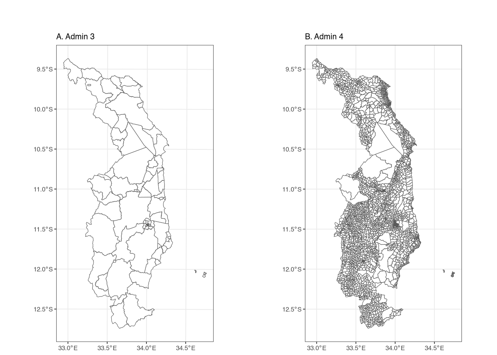
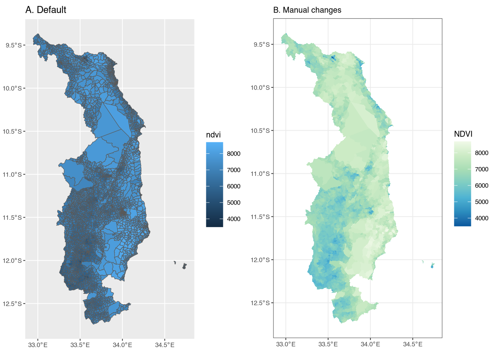
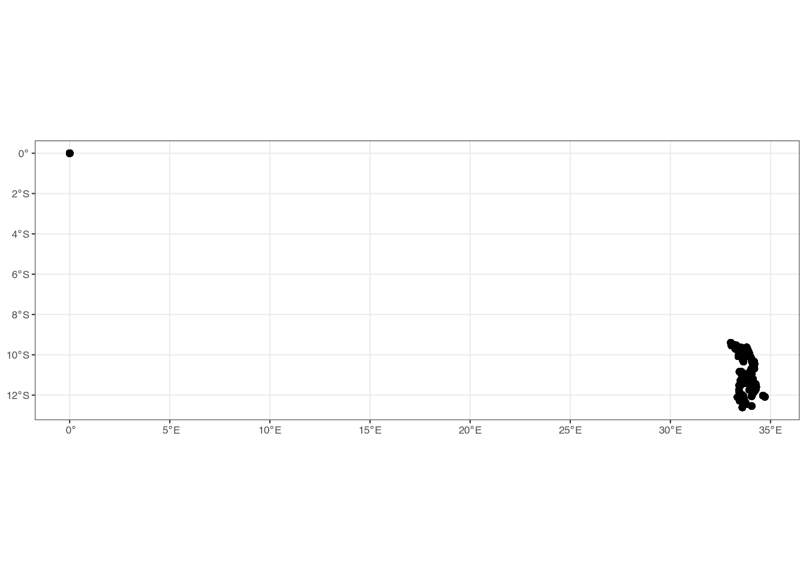
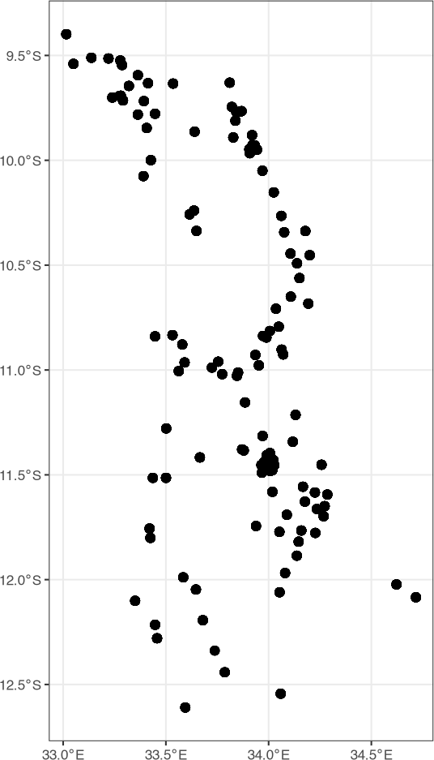
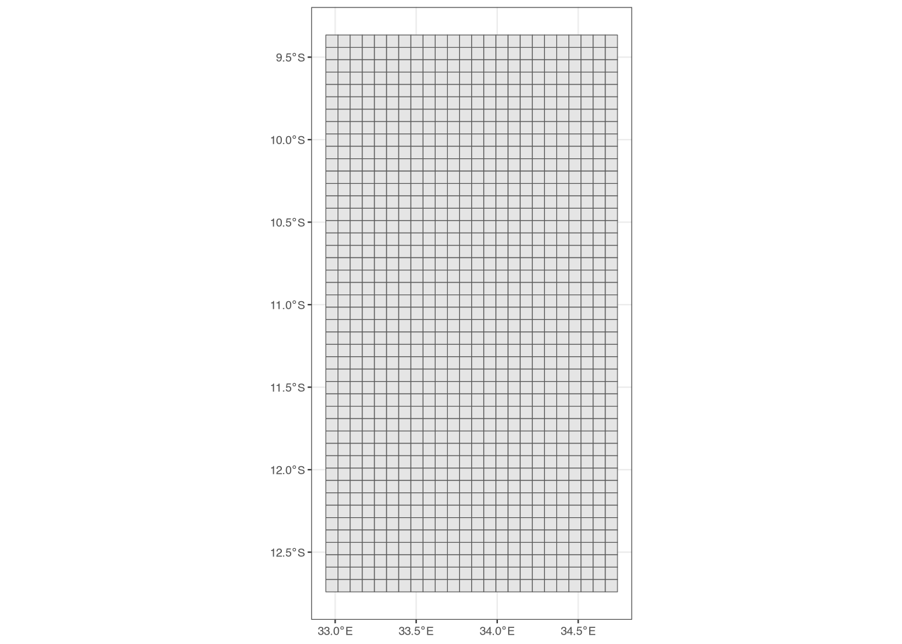
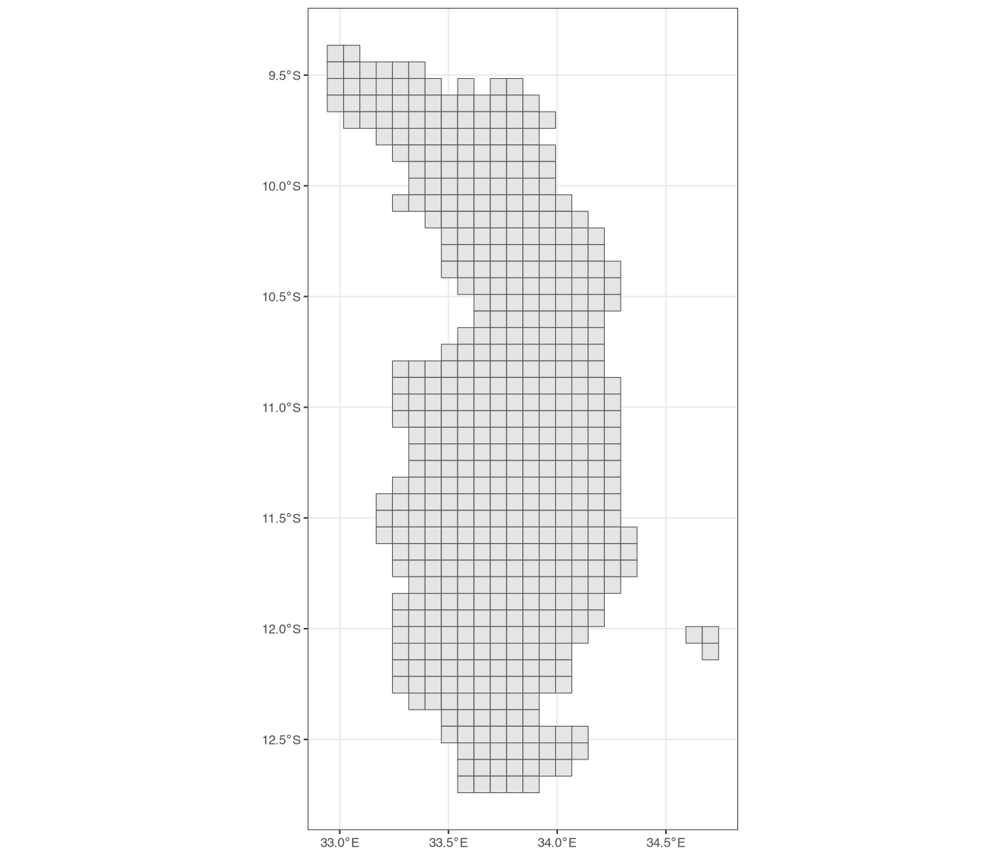
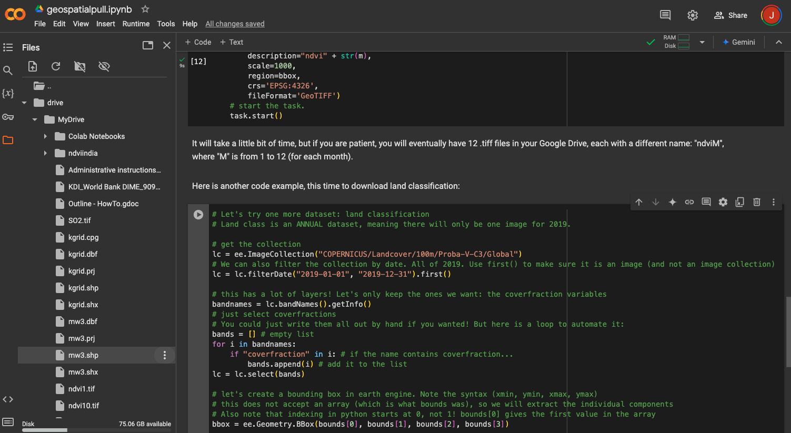
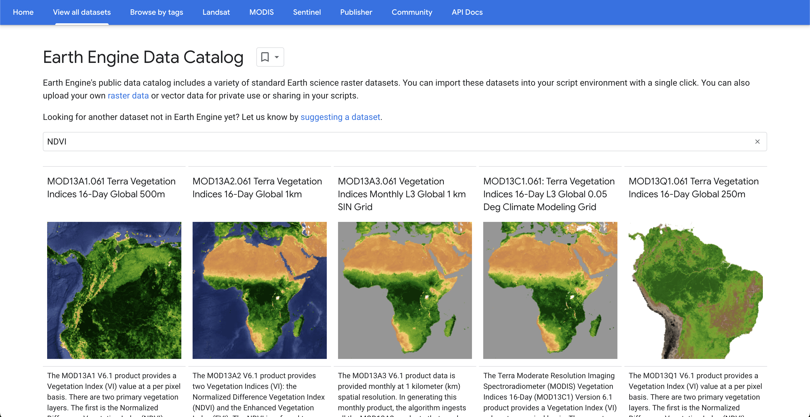

Rasters
4 Rasters
We generally use shapefiles to outline different types of administrative areas or geographic features. However, shapefiles are rarely used to store data. The reason is simple: memory. Shapefiles are simply not efficient for storing large amounts of data, at least relative to rasters. Nonetheless, it is common to use shapefiles to extract data in order to estimate SAE models. For example, in later sections, we will be estimating an SAE model at the EA (admin 4) level in Malawi. This means that we need to aggregate any predictors to the EA level, which we will do using an EA-level shapefile and rasters.
Rasters are a different type of geospatial data. Instead of outlining polygons with points, rasters are composed of a grid – each cell of which has a value (or values) – such as the grid in Figure 1. If Figure 1 were a shapefile, each individual cell would require five vertices.1 But a raster is different. Since each grid cell is the exact same dimensions, we only need to know two things in order to locate all of the grid cells in space: A single point at the corner (or the centroid) of the grid, and the dimensions of the grid cells! This makes storing data in rasters much more efficient than storing data in shapefiles. The trade-off, of course, is that each cell is an identical shape, while shapefile features can be any shape.
While we will be dealing with rasters in the context of geospatial data, raster data simply refers to the format in which it is stored. Many common image file formats are also rasters. For example, .png and .jpg files are both rasters – the images are composed of many individual grid cells – though without the geospatial component that we will be using.
4.1 Reading and plotting rasters
As with shapefiles, we will be reading rasters using the terra package. In the data folder on the GitHub repository, you will find a raster file called ndviexample.tif. This raster file contains a vegetation index, NDVI, for April of 2019. To read this raster file, we can use the following code:
class : SpatRaster
dimensions : 377, 203, 1 (nrow, ncol, nlyr)
resolution : 0.008983153, 0.008983153 (x, y)
extent : 32.94122, 34.7648, -12.74709, -9.360445 (xmin, xmax, ymin, ymax)
coord. ref. : lon/lat WGS 84 (EPSG:4326)
source : ndviexample.tif
name : NDVI As before, we can print the object (ndvi) and inspect some of the summary information. Much of the information is similar to what we saw with the shapefile, but there are some differences.
class: SpatRaster: This simply means that we loaded the raster file usingterra.dimensions : 377, 203, 1 (nrow, ncol, nlyr): The raster has 327 rows, 203 columns, and one layer. The “layer” refers to the number of bands – or variables – in the raster. In this example, the raster contains just one piece of information: NDVI.resolution : 0.008983153, 0.008983153 (x, y): The resolution is the size of each grid cell. In this case, the CRS is longitude/latitude, meaning the resolution is in degrees, not meters.name: NDVI: The names are the names of the layers/bands/variables. Again, there is only one variable in this raster, and its name isNDVI.
To plot the raster, we will use ggplot and geom_spatraster. This function will automatically plot the raster, with a color scale that goes from the minimum to the maximum value in the raster. In this case, our raster has only a single variable, so we do not need to worry ourselves with other specifics for now. We can plot the raster with:

Figure A (left panel) is the most basic raster plot. It includes a blue color scale, with lighter-shade blues indicating higher NDVI values. However, the title of the legend is simply “value.”
Figure B (right panel) includes several differences in order to highlight some additional ggplot syntax and improve the presentation. First, we change the color scale using scale_fill_distiller(). The palette argument specifies the color palette; in this case, we use the “GnBu” (green to blue) palette.2 Second, we add a title to the legend, “NDVI,” to make it clear that the values refer to NDVI.3 Finally, we again change the base theme to theme_bw().
4.2 Extracting raster data into shapefiles
It is worth taking a minute to remember where we want to end up. Our final goal is to estimate a small area model using geospatial data. To do so, we will need to extract the raster data into a shapefile; that shapefile could be admin 4 polygons (EAs in the case of Malawi), grid polygons, or household points. In other words, we want the predictors from rasters – e.g. NDVI or nightlights – aggregated up to the admin 4 level. In this section, we will show how to extract raster data into a shapefile.
If we want to estimate a model at the admin 4 level, we will extract the raster data into the admin 4 shapefile. This “extraction” process will overlay the raster with the shapefile and find the different “tiles” of the raster that overlap each polygon in the shapefile in order to aggregate them with some chosen function.4 We can do this using the extract() function from the terra package. The extract() function will take the raster data and extract it into the shapefile. Let’s first load the admin 4 shapefile into R, using vect from the terra package:5
class : SpatVector
geometry : polygons
dimensions : 3212, 3 (geometries, attributes)
extent : 32.94242, 34.75888, -12.74058, -9.367346 (xmin, xmax, ymin, ymax)
source : mw4.shp
coord. ref. : lon/lat WGS 84 (EPSG:4326)
names : DIST_CODE EA_CODE TA_CODE
type : <chr> <chr> <chr>
values : 105 10507801 10507
105 10507072 10507
105 10507010 10507Here we see the same kind of output as when we looked at the admin 3 shape file, but with some different values since the admin 4 shapefile has different attributes (and more features). We can see the difference visually in Figure 2.
The left figure shows the outline of admin 3 areas, while the right figure shows the outline of the admin 4 areas. The admin 4 areas are smaller and more numerous than the admin 3 areas (3,212 features vs. 76 features). Though they cover the same geographic area, the admin 3 shapefile takes up 4.9 MB of memory, while the admin 4 shapefile takes up 40.3 MB. We mention this because larger shapefiles can sometimes lead to memory issues on some computers, especially when extracting data from large rasters.

We want to extract the NDVI data into the admin 4 shapefile, such that each feature (geographic area) in the admin 4 shapefile has the average NDVI value for that feature. We can do this using the extract() function from the terra package, which will create a data frame with the average NDVI for each feature. The code is:
# note the order and that we want the MEAN:
extractedndvi <- extract(ndvi, mw4, fun = "mean")
head(extractedndvi) ID NDVI
1 1 6225.000
2 2 6624.000
3 3 6112.167
4 4 6883.500
5 5 6684.200
6 6 6252.667The extract() function takes three arguments: the raster data, the shapefile, and the function to apply. In this case, we want the mean NDVI value for each feature, so we use fun = "mean". The output is a data frame with two columns, but the important point is that the order of rows is identical to the order of rows from the shapefile.6 This means that we can simply add the NDVI values to the shapefile as a new column:
DIST_CODE EA_CODE TA_CODE ndvi
1 105 10507801 10507 6225.000
2 105 10507072 10507 6624.000
3 105 10507010 10507 6112.167
4 105 10507001 10507 6883.500
5 105 10507009 10507 6684.200
6 105 10507033 10507 6252.667This code takes the column NDVI from the extractedndvi data and adds it to the mw4 shapefile as a new column, ndvi. We can see the results when looking at the first few rows of mw4.
With this data, we can now plot the admin 4 shapefile, explicitly telling ggplot to color the features based on their ndvi value:

Figure A (left panel) of Figure 3 shows the admin 4 shapefile with the NDVI values. The color scale is the defaul. Figure B (right panel) shows the same shapefile, but with several changes. First, since our goal is to present the fill color for each admin 4, we set the color of the outline of each feature to be NA (i.e. transparent). Figure A is quite difficult to read due to the size of the features relative to the size of the boundary lines. Second, we use scale_fill_distiller to change the color scale, again using the green-to-blue scale from before. Finally, we change the base theme to theme_bw(base_size = 8). In our opinion, these changes result in a much more visually appealing figure.
4.3 Creating a shapefile from points
In the data folder, we have created a folder called ihshousehold, which contains two separate household-level datasets from the Fifth Integrated Household Survey (IHS5). The first contains consumption aggregates (i.e. expenditures, as well as a poverty measure), while the second contains household geovariables, including geocoordinates.7 For now, we focus on the latter.
To ensure confidentiality, GPS coordinates in publically available datasets are generally never exact; instead, they are jittered by a random amount in order to preserve the anonymity of respondents. In other words, the GPS coordinates are not the exact location of the household, but rather a randomly selected point within a certain distance of the true location. Additionally, in this dataset, the coordinates are for the enumeration area (the primary sampling unit) of the survey, which is why multiple households have the same coordinates.
The household datasets have the .dta extension, which means they are Stata files. We can read these into R using the package haven and the function read_dta(), as follows:
[1] "case_id" "ea_id" "dist_road" "dist_agmrkt"
[5] "dist_auction" "dist_admarc" "dist_border" "dist_popcenter"
[9] "dist_boma" "ssa_aez09" "twi_mwi" "sq1"
[13] "sq2" "sq3" "sq4" "sq5"
[17] "sq6" "sq7" "af_bio_1_x" "af_bio_8_x"
[21] "af_bio_12_x" "af_bio_13_x" "af_bio_16_x" "afmnslp_pct"
[25] "srtm_1k" "popdensity" "cropshare" "h2018_tot"
[29] "h2018_wetQstart" "h2018_wetQ" "h2019_tot" "h2019_wetQstart"
[33] "h2019_wetQ" "anntot_avg" "wetQ_avgstart" "wetQ_avg"
[37] "h2018_ndvi_avg" "h2018_ndvi_max" "h2019_ndvi_avg" "h2019_ndvi_max"
[41] "ndvi_avg" "ndvi_max" "ea_lat_mod" "ea_lon_mod" The new df object is a household-level dataset with many variables (44, to be exact). The above code uses colnames(df) to display the names of the columns (variables), in order to identify which columns contain the GPS coordinates. In this case, the relevant columns for longitude and latitude are called ea_lon_mod and ea_lat_mod, respectively, where the “ea” indicates that they are for the enumeration area – not the household – and the “mod” indicates that they are modified (jittered). The other important column is the household identifier, which in this case is case_id. As we really only need these three variables, we can use tidyverse to select only those columns:
# Select just the columns we want
df <- df |>
select(case_id, ea_lon_mod, ea_lat_mod)
# simple summary statistics
summary(df) case_id ea_lon_mod ea_lat_mod
Length:2176 Min. : 0.00 Min. :-12.610
Class :character 1st Qu.:33.50 1st Qu.:-11.482
Mode :character Median :33.92 Median :-10.978
Mean :32.09 Mean :-10.345
3rd Qu.:34.03 3rd Qu.: -9.909
Max. :34.72 Max. : 0.000
NA's :1 NA's :1 We have used the select() function from the tidyverse package to select only the columns we want, using a pipe operator (|>) to chain things together. One way to read this code is “take df and then select these columns. Replace df with the new object.”
The summary() function gives us some basic summary statistics for the three variables. case_id is a character (i.e. a string), while ea_lon_mod and ea_lat_mod are numeric. However, there appears to be some strange minimum/maximum values for the two variables. We can turn this data into a spatial object using terra and then plot the points to look at them more closely.
class : SpatVector
geometry : points
dimensions : 2176, 1 (geometries, attributes)
extent : 0, 34.71688, -12.60982, 0 (xmin, xmax, ymin, ymax)
coord. ref. : lon/lat WGS 84 (EPSG:4326)
names : case_id
type : <chr>
values : 101011000014
101011000023
101011000040

Figure 4 clearly shows that there are some incorrect values in the GPS data! There are some households that have coordinates of (0, 0), which should not be the case since these households clearly fall outside of (Northern) Malawi. For now, we are simply going to remove these from the data:8

Figure 5 shows that we have removed those households that had coordinates of (0, 0). We can now use these points to extract information from other shapefiles or other rasters. For example, we might want to get the admin identifiers from the mw4 shapefile into the points or get NDVI values at the location of households (or near them).
We can extract information from another shapefile by doing a spatial join using terra. There are multiple ways to do this, but one is to use the function extract(), as follows, noting that the order is polygons first, points second:
Looking at the dimensions (using dim()), we see that the new object has the same number of rows as the original df object. However, it has more columns since it also has information from the mw4 shapefile. A key clarification is that the new object, dfmw4, is a data frame, not a spatial object. In other words, it does not contain any information relating to the spatial coordinates from the original shapefile or raster, but instead is what you would get if you, for example, loaded a .csv file into R. However, the rows are in the same order as the original df object, so we can simply add the new columns to the original df object:
# cbind, excluding the FIRST column from dfmw4
# the first column is called "id.y", which we do not need
df <- cbind(df, dfmw4[,-1])
head(df) case_id DIST_CODE EA_CODE TA_CODE ndvi
1 101011000014 101 10101006 10101 6098.6
2 101011000023 101 10101006 10101 6098.6
3 101011000040 101 10101006 10101 6098.6
4 101011000071 101 10101006 10101 6098.6
5 101011000095 101 10101006 10101 6098.6
6 101011000115 101 10101006 10101 6098.6Since we already extracted NDVI into the mw4 shapefile, it is now also in the new df object. However, we can also extract raster values directly to the points, again using the extract() function and the same steps as above, creating a new column (or, in this case, replacing an existing column) called ndvi:
Note that these new values will be different from the values we extracted into the mw4 shapefile. The reason is simple: the mw4 shapefile consists of polygons and we took the mean NDVI value for each polygon. For the household points, however, we extract only the raster value for the raster grid in which the point falls. Another option is instead to take the value of the nearest four raster cells. We can do this using the method = "bilinear" option in extract():
dfextracted <- extract(ndvi, df, method = "bilinear")
df$ndvibilinear <- dfextracted$NDVI
summary(df[[c("ndvi", "ndvibilinear")]]) ndvi ndvibilinear
Min. :4442 Min. :4770
1st Qu.:6033 1st Qu.:6116
Median :6769 Median :6752
Mean :6678 Mean :6683
3rd Qu.:7233 3rd Qu.:7198
Max. :8781 Max. :8538 Using the summary() function, we see that the values are slightly different from the two methods. In particular, the “bilinear” option has less extreme values, since we are taking the mean of many raster cells instead of the value from one.
4.4 Creating a grid
As mentioned previously, an alternative to using administrative geographies for our small area estimation is to instead create a grid that covers Northern Malawi. Recall from above that a raster is just a grid, where each grid cell has the same size (resolution). We want to create a shapefile that is essentially a raster, so we will first create a raster, and then turn it into a shapefile!
We can create a raster using the rast() function from terra, but we have to be careful about the resolution. Specifically, we are going to use a shapefile to define the area in which we want to create the grid. We have to specify the resolution in the same units (CRS) as the shapefile. If the shapefile is projected into, for example, UTM, then we need to specify the resolution in meters. On the other hand, if it is in longitude/latitude, we need to specify the resolution in degrees. Since our mw4 shapefile is in longitude/latitude, we will use degrees to specify the size of the grid.9
grid <- rast(mw4, res = 0.075)
grid <- as.polygons(grid)
grid$id <- 1:nrow(grid)
ggplot() +
geom_spatvector(data = grid) +
theme_bw(base_size = 8)

What have we done? We have created a raster that covers the extent of mw4, each cell of which has a resolution of 0.075 degrees. We then turned this raster into a shapefile using as.polygons(). The id column is simply a unique identifier for each grid cell, which we will use in a minute.
Figure 6 shows the resulting grid we have created, but we have a problem: since it covers the entire extent of mw4, there are many grid cells that fall outside of Northern Malawi. We want to remove all of these grid cells from the shapefile. We can do this by finding all grid cells that overlap with the mw4 polygons/features and then filter the grid shapefile to keep only the grid cells that overlap with the mw4 shapefile. This is where the id column comes into play:
# create intersection
intersection <- intersect(grid, mw4)
# now filter the grid using the id column
# (only keep ids that are IN the id column of intersection)
grid <- grid |>
filter(id %in% intersection$id)
ggplot() +
geom_spatvector(data = grid) +
theme_bw(base_size = 8)

The intersect() function creates a new shapefile that contains all intersections between the two shapefiles. It has the id column in it from grid, so we then filter the grid to keep only the grid cells whose id is in the id column of intersection. Figure 7 shows the resulting grid, which now properly represents Northern Malawi. We could of course then use this grid shapefile to extract raster data, as we did before. We could also find which grid cell in which the households fall, again using the same syntax as above, when we placed the households within admin areas to extract the admin 4 identifier.
4.5 Where can we get rasters?
Rasters are relatively easy to find, but accessing them is not always straightforward. There are however, some websites that host simple raster files (e.g. .tif or .nc files) that can be easily downloaded. These include:
- WorldPop: WorldPop provides estimated population data in raster form for almost all countries across the globe. The data is available at different resolutions (e.g. 100m and 1km) and for different years.
- TerraClimate: TerraClimate provides monthly estimates of different climate variables, including precipitation and temperature. You can download the data directly from the website, by going to
Download > Individual Years, selecting which year you want, and then clicking the link forHTTPServer. - Colorado School of Mines - Nighttime Lights: Here you can find monthly and annual composites of nightlights, available for free download.
- Mosaiks: Mosaiks provides access to features (rasters) which were produced using machine learning and satellite imagery (Rolf et al., 2021). For details, it is important to refer to the website and the associated paper, but from experience, these features can often predict many outcomes quite well. The entire dataset is very large, so it is recommended that you download only the spatial areas you need.
- Open Buildings: While not rasters, the Open Buildings project provides access to building footprints for many countries. These footprints are shapefiles. Building counts can be highly predictive of many outcomes, including poverty. A word of warning: these shapefiles can be very large, so working with them can be difficult in terms of computer memory.
Here, we briefly discuss two of these in more detail.
4.6 Worldpop
WorldPop provides (modeled/estimated) population data at a disaggreated level for almost all countries. The data is available at different resolutions (e.g. 100m and 1km) and for different years, with the most recent year available at the time of writing being 2020. Worldpop data is probably the easiest data to access of all the raster data discussed here. You can download data directly from the website by selecting the methodology (unconstrained vs. constrained)10 and resolution (100m vs. 1km) and then searching for the country and year of interest. You can then directly download a .tif file that you can read into R using the methods described above.
4.7 Mosaiks
Mosaiks provides access to features (rasters) which have been produced using machine learning and satellite imagery (Rolf et al., 2021). The entire dataset is very large, so it is strongly recommend that you download only the spatial areas you need. To access the raw features, you need to create an account on the website. After logging in, you can click Map Query at the top of the page and then use the coordinates for a bounding box to download just the data you need.
Accessing the data can be a bit challenging due to restrictions on the number of records that you can download at one time. As such, for larger areas, you will have to download the data in smaller chunks. There is an alternative, however. This will result in slightly less accurate data, but it is much faster and can still provide acceptable predictive power. At the top of the website, there is a File Query option. If you select this and provide a .csv file with the coordinates for each admin area you are interested in, it will return the data associated with those coordinates. For example, you can create “centroids” for our admin 4 (EA) shapefile for Malawi, as follows:
mw4 <- vect("data/mw4.shp")
# create centroids
mw4centroids <- centroids(mw4)
# create Latitude and Longitude columns:
mw4centroids$Latitude <- geom(mw4centroids)[,"y"] #"lat" column
mw4centroids$Longitude <- geom(mw4centroids)[,"x"] #"lon" column
# just keep what we want
mw4centroids <- as_tibble(mw4centroids) |>
select(Latitude, Longitude, EA_CODE)
# save
write_csv(mw4centroids, "data/mw4centroids.csv")
# here's how it looks
head(mw4centroids)# A tibble: 6 × 3
Latitude Longitude EA_CODE
<dbl> <dbl> <chr>
1 -12.6 33.6 10507801
2 -12.7 33.7 10507072
3 -12.5 33.6 10507010
4 -12.4 33.7 10507001
5 -12.5 33.6 10507009
6 -12.5 33.6 10507033You can upload this .csv file to the File Query page on the Mosaiks website and, after some time, you will find the resulting data on the My Files page. To note that you do not have to name the columns exactly as in the example above; the website allows you to select the correct columns for the x and y coordinates. However, to make things simpler, the above code uses the same names and column order as the website example.
4.8 Using Python to access Google Earth Engine
While there are many ways to access raster data, probably the largest collection of datasets is Google Earth Engine (GEE) (Gorelick et al., 2017). GEE is a data repository that includes many different types of raster data, including satellite imagery, climate data, vegetation indices, land classification, and many others.
Unfortunately, downloading data from GEE is not as simple as downloading a file from one of the websites listed above. GEE has a code editor available on the website, but it can be difficult for users who are not familiar with JavaScript. There is also an API11, but it runs on Python. While there is an R package, it is just a wrapper for Python, meaning you still have to have Python downloaded and install on your computer. In addition, getting Python to run in R – using the reticulate package – brings its own challenges. For the purpose of this guide, it is therefore recommended that you use Python directly to access GEE.
One option is to simply use Python on your own computer. However, we find that this presents its own challenges, as getting a new installation of Python up and running can be difficult for those without any experience using Python. Instead, we recommend that users use Google Colab, which is a free service that allows you to run Python code in the cloud. Using Google Colab has the advantage of not having to install Python on your computer (and it also allows you to access the data from anywhere you have internet access, which of course can also be a downside).
To start, we have uploaded a Python “notebook” to the GitHub repository that provides information on how to download data; the notebook is called geospatialpull.ipynb. To get started, you need to create an account on Google Earth Engine. From the GEE homepage, click on Get Started in the upper-right corner. You will need a Google account to sign in, then you will have to follow the steps for registering a noncommercial project, creating a new “Google Cloud Project,” and enabling the Earth Engine API. After following the steps to create a “Cloud Project,” you will be able to access the Earth Engine API. Make sure to take note of the project’s name, which you will need later.
After creating your GEE account, you can copy the geospatialpull.ipynb notebook into Google Colab. You can do this by going to the Google Colab website and clicking on File > New Notebook in Drive. You can then copy-paste the code from the geospatialpull.ipynb notebook into the Google Colab notebook. You need a Google account, but you should already have one from the above instructions to create a GEE account; use the same account to log in to Google Colab, if asked.
You will need to authenticate your Google account by running lines 14-20 in the example script (after copy-pasting the entire script into the Google Colab notebook), which will allow you to access the GEE API. You can do this by selecting all the relevant lines and pressing control + enter (or command + enter on a Mac). You will be asked to allow access to your GEE account, which you should allow.
4.8.1 Using the Python script
The geospatialpull.ipynb notebook includes several different steps. First, you need to authenticate the API using the ee.Authenticate() function (discussed above). This will open a new tab in your browser, where you will be asked to sign in to your Google account and to allow the API to access your account. After clicking through the steps, you will see an API key, which you need to copy. You can then paste this key into the terminal and press enter, which will allow you to access the API.
Second, you will need to initialize the API using the ee.Initialize() function. You should specify the name of the cloud project from above, as follows:
where "NAME" needs to be the name of your cloud project. In other words, you will need to change the script in Google Colab to include the name of your cloud project.
One nice thing about Google Colab is that you can upload a shapefile to your Google Drive, which you now have access to after making a Google account. You can also upload it to your drive directly through Google Colab. On the far left side of the screen, there are five icons – the first looks like three bullet points and the last one looks like a folder. Click the folder. Then, you will see four separate icons after clicking the folder; the third icon looks like a folder with an icon on it (if you hover over the icon, it will say “Mount Drive”). Click it. Google will then prompt you to mount your drive manually; simply follow the instructions and click through any approvals that pop up. Finally, after the drive is “mounted,” click on “drive” and then on “MyDrive”. If you hover over “MyDrive” you will see three dots on the right side. Click those, then select “upload” and upload all of the files associated with your shapefile. In other words, for Malawi you have to include all of the mw3 files, not just mw3.shp. In this case, there are four separate files: mw3.shp, mw3.shx, mw3.dbf, and mw3.prj.
In our example, we are using a shapefile from Malawi. If you have already uploaded the shapefile, can skip most of the steps above and simply “mount” the drive in Google Colab, using the code already in the notebook:
We have put our shapefile (mw3.shp) in our Google Drive folder. After actually running the above code (click on the “play” button on upper-left-hand side of the code “chunk”), you will be able to see your Google Drive on the left-hand side of the screen, as in Figure 8.

If you click the three dots, you can then click on “Copy path” to get the path to the shapefile. You can then use this path in the Python script to load the shapefile into Python using the library “geopandas”. Here is the code for the location of mw3.shp in my Google Drive (you might have to change the path based on the location of your shapefile, which you copied with “Copy path”):
In addition to loading the shapefile into Python, the code does two additional things. First, it reprojects the shapefile into longitude/latitude (“EPSG:4326”, which we already saw above). We need this in order to create a proper “box” for our region. Then, it finds the “total bounds” of the shape, which is the box that completely contains the shapefile (see Figure A1 in the appendix). We will use this box to define the region from which we want to download data.
Now you need to decide what GEE dataset we want to download. As an example, let’s look for NDVI. Navigate to the GEE homepage and click on “Datasets” at the top of the page (near the middle). On the next page, click “View all datasets.” From the next page, we can search for datasets using key words. Search for “NDVI” (without quotes) and press enter. Here, you will see many search results, as in Figure 9.

Download monthly NDVI at 1km, which in the above figure is the third option. Click on that dataset, which is called MOD13A3.061 Vegetation Indices Monthly L3 Global 1 km SIN Grid. On the next page, you will see a description of the data. Some of the important information on this page is:
Dataset Availability: This shows the dates for which data is available. In this case, the data starts in February of 2000 and goes to the present (or, at least, a month before the present).Dataset Provider: Where the data comes from.Earth Engine Snippet: This is very important. This is the identifier you will use to access the data in Python. For this dataset, the identifier isMODIS/061/MOD13A3.Bands: There is a list of different tabs, just below theTagssection. TheBandstab shows:- The resolution of the raster. We chose the
1kmoption, so its resolution is 1000 meters. - The name of the bands. In this case, there are two bands of vegetation indices: NDVI and EVI. We will just focus on NDVI for now.
- The minimum and max values of the bands. NDVI should be between -1 and 1, which we can recover by multiplying the min/max values by the scale (in this case, 0.0001). However, given what we want to do with the data, it is okay for us to simply leave it in its original values.
- The resolution of the raster. We chose the
Now let’s try to access this dataset in Python. You can use the ee.ImageCollection function to access the data. The code is as follows:
This tells the API to access the specified dataset, which is an “Image Collection.” The print(ndvi.getInfo()) command will print information in the console. In this case, it prints a lot of information, so it is not reproduced below. If it prints information, you will know that you successfully queried the dataset and can move on to the next step.
This dataset covers more than 20 years. The household data we are using is for 2019, so for now we will just download 2019 data.12 In particular, let’s start with just January 2019. You can do this by filtering the ndvi object, as follows:
You now have a filtered dataset that contains data for January 2019. We are now going to do two more things. First, we are going to select only NDVI (i.e. get rid of EVI). Second, we are going to take the “mean” of the image – which really takes the mean of each cell in the raster – in order to make sure that we have only a single image, and not an image collection. The code for this is as follows:
# for assets that have many bands (raster layers), we can select the specific ones we want:
ndvi = ndvi.select("NDVI")
ndvi<ee.imagecollection.ImageCollection object at 0x35ed71730><ee.image.Image object at 0x365ae3560>We can see the change in the output after ndvi.mean(). Before the function call, the ndvi object had the class ee.imagecollection.ImageCollection. However, after the mean call, the object is now of class ee.image.Image. This is what we want, since we can now download the data.
We also want to select data for just a portion of the globe, and not the entire globe, in order to make the code faster and decrease the size of the resulting raster. We already created the bounding box for Northern Malawi, but one change is needed so that GEE will interpret the box correctly. We are going to create an ee.Geometry.Bbox object. To do so, we need to give it four values:
- The minimum longitude
- The minimum latitude
- The maximum longitude
- The maximum latitude
It will not accept the array object we created prior, so we are going to create the geometry object as follows:13
"""
let's create a bounding box in earth engine.
Note the syntax (xmin, ymin, xmax, ymax)
this does not accept an array (which is what bounds was),
so we will extract the individual components
Also note that indexing in python starts at 0, not 1! bounds[0]
gives the first value in the array
"""
bbox = ee.Geometry.BBox(bounds[0], bounds[1], bounds[2], bounds[3])We can now send the bbox with our code to GEE, which will return only data that is within the bounding box.
Here is the code to start the download, which is described further below:
1task = ee.batch.Export.image.toDrive(image=ndvi,
2 description='ndvi1',
3 scale=1000,
4 region=bbox,
5 crs='EPSG:4326',
6 fileFormat='GeoTIFF')
7task.start()
8task.status()- 1
-
image=ndvi: This is the image we want to download. In this case, it is the mean NDVI for January 2019 (which we specified prior to this call). - 2
-
description='ndvi1': This is the name of the file that will be downloaded. You can change this to whatever you want. - 3
-
scale=1000: This is the resolution of the raster. This GEE dataset has 1000m resolution, so it makes sense to choose the same here. It never makes sense to choose a resolution higher (i.e. smaller) than the original resolution, but you can choose a resolution that is lower (i.e. larger), for example to export a smaller object. - 4
-
region=bbox: This is the region of the world we want to download. We created our box using Northern Malawi. - 5
-
crs='EPSG:4326': Specifying the CRS we want to download. In this example, longitude/latitute is used. - 6
-
fileFormat='GeoTIFF': The format of the file we want to download. As it is a raster, we will download aGeoTIFF(.tiffile.) - 7
-
task.start(): This starts the download. You must run this line in order to actually download the data. - 8
-
(Optional)
task.status(): This will give you the status of the download. Depending on the size of the data, the entire process can sometimes take a while. In this example, it should be relatively quick.
When the task has finished, the resulting raster – in this case, ndvi1.tif – will be saved in the Google Drive associated with the account you used to sign into GEE. The free version of Drive has only 1GB of storage, so be careful with memory management. It is recommended you move the .tif files out of Drive and onto your computer as soon as it has finished downloading.
In the geospatialpull.ipynb notebook, there is also an example of how to download a raster for every month of 2019 using a ‘for loop’. Please see lines 70 to 101 in that script.
You can follow the same steps for any other indicator. Here, we provide one more example for land cover, which is highly correlated with urbanity and, as such, poverty. The proper identifier for the dataset we are going to use is COPERNICUS/Landcover/100m/Proba-V-C3/Global, which provides annual estimates of land cover at a resolution of 100m. You can find information for this dataset on GEE, here.
As before, we load the dataset, filter it for 2019 (in this case, we are going to filter for the entirey of 2019, and not just January), select the bands we want, and then download it. The code is as follows:
Note the use of .first() on line four. This insures that the function returns an image, not an image collection. We can then select the bands we want and download the data, as we did with NDVI. On the GEE page for this dataset, you can see that it has many different bands. We are going to download all of the bands with the word “coverfraction” in them. To get the names of the bands, we can use .bandNames().getInfo():
['discrete_classification', 'discrete_classification-proba', 'bare-coverfraction', 'urban-coverfraction', 'crops-coverfraction', 'grass-coverfraction', 'moss-coverfraction', 'water-permanent-coverfraction', 'water-seasonal-coverfraction', 'shrub-coverfraction', 'snow-coverfraction', 'tree-coverfraction', 'forest_type', 'data-density-indicator', 'change-confidence']Now, we want to select only the band names that contain the string “coverfraction.” There are several ways to do this. One way is to simply note that the bands we want are bands three through 12 (indexed as two through 11 due to differences in Python). We can then use the ee.Image.select() function to select only these bands, remembering that Python calls elements in a list differently than R:
['bare-coverfraction', 'urban-coverfraction', 'crops-coverfraction', 'grass-coverfraction', 'moss-coverfraction', 'water-permanent-coverfraction', 'water-seasonal-coverfraction', 'shrub-coverfraction', 'snow-coverfraction', 'tree-coverfraction']The geospatialpull.ipynb notebook shows another example, to help make you more familiar and comfortable with loops in Python. You can find the loop on lines 144 to 156 in the Python script.
After selecting the relevant bands, you can download the data using the same syntax as before (along with the same bounding box):
Note that this will take longer to download than the NDVI data as you are downloading multiple bands, at a higher resolution. After downloading the data, it will again appear in your Google Drive. Move out it and into the folder on your computer in which you have been working.
4.9 Geolink
As of the time of this writing, there is a package being developed to enable the pulling of geospatial data directly in R, without the use of Google Earth Engine or Python. You can find documentation and examples on GitHub. This package is still in development, so we encourage readers to check on GitHub for updates.
4.10 Finishing up
At this point, you should download all of the geospatial data you need for your SAE model. An important piece of this is estimated population (from WorldPop), which we will use later as weights. Some common datasets used for SAE include:
- Population
- NDVI (by month)
- Nighttime lights
- Land cover classification
- Mosaiks
You can of course add anything else you think might be helpful. We will use only the above data in the rest of this guide.14 The final variables, at the EA (admin 4) level, are saved in the finalgeovars folder on the GitHub repo. If you would like to see how these variables in R, please see the geoaggregation.R script in the GitHub repository. The final dataset that we will use for this guide is data/geovarseas.csv.
4.11 References
Gorelick, Noel, Matt Hancher, Mike Dixon, Simon Ilyushchenko, David Thau, and Rebecca Moore. 2017. “Google Earth Engine: Planetary-Scale Geospatial Analysis for Everyone.” Remote Sensing of Environment. https://doi.org/10.1016/j.rse.2017.06.031.
Rolf, Esther, Jonathan Proctor, Tamma Carleton, Ian Bolliger, Vaishaal Shankar, Miyabi Ishihara, Benjamin Recht, and Solomon Hsiang. 2021. “A Generalizable and Accessible Approach to Machine Learning with Global Satellite Imagery.” Nature Communications 12 (1): 4392.
Footnotes
While a square only has four corners, a fifth point is required in order to close the feature and create a polygon. In other words, the first and last points are the same point.↩︎
The GnBu palette is a palette from
RColorBrewer. You can find its palettes here.↩︎NDVI traditionally ranges between -1 and 1. The values here go up to 10,000 due to the way the data is scaled on Google Earth Engine (which we return to below).↩︎
For example, for nightlights, we might decide to aggregate by taking the mean value from the raster tiles that overlap with a given polygon. For population, on the other hand, we would probably want to take the sum.↩︎
You can find the
adm4.shpfile in thedatafolder.↩︎We use the
head()function to show just the first six rows of the resulting object.↩︎We have restricted the data to only Northern Malawi.↩︎
Any households with missing (
NA) coordinates were removed when we transformed the data into a spatial object.↩︎You may not get the size right on the first try, especially in degrees. The goal is to get a grid that is small enough to capture the variation in the data, but not so small that the model will be bad.↩︎
According to the WorldPop website, the two methods are “1. Estimation over all land grid squares globally (unconstrained), and 2. estimation only within areas mapped as containing built settlements (constrained).”↩︎
You can find an excellent introduction to APIs on the IBM website.↩︎
In theory, we could also construct long-run means or standard deviations, which would require pulling data for other years, as well. However, for parsimony, we focus just on 2019 here.↩︎
Python uses something called “zero indexing.” This means that the first element in a Python object is listed as 0, and not 1. This is different from
R.↩︎In the uploaded data on GitHub, we only include a subset of Mosaiks features due to its size. If you have the RAM, you can download and include all of them.↩︎